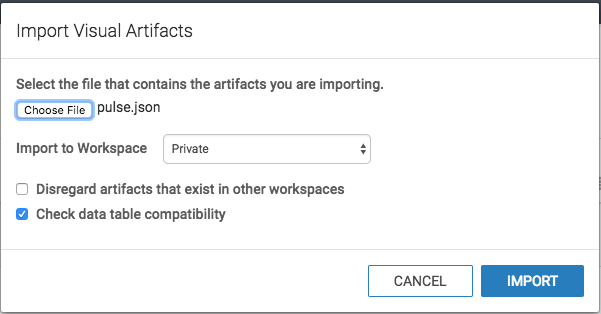

Visualization
Pulse uses Solr, which can use several Visualization tools, including Hue and Arcadia Data.
Pulse Data Visualization using Arcadia
Arcadia is visual analytics and BI software that runs natively within modern data platforms such as Apache Hadoop and the cloud. Read here for more information.
Data visualization using sample arcadia dashboard extract pulse.json
Create new solr connection
- If Solr connection is not existing in Arcadia Data, create one using this link Creating New Apache Solr Connection
Create new dataset
- Sign into Arcadia
-
Click on
DATA
-
Go to
solrconnection created in the previous steps and click onNEW DATASET
-
Enter your Dataset title, use
solras database and finally select the solr collection that you want
-
Click
CREATE - You should be able to see the new dataset created

Replace dataset_name and dataset_detail from pulse.json
The replace-dataset-name.sh script can be found in the visualizations/arcadia folder.
- Use
replace-dataset-name.shscript to replace dataset_name and dataset_detail with the dataset name and Solr index name of your own dataset - command
./replace-dataset-name.sh my_dataset_name Solr.my_application_all dashboard.jsonis ready to be imported
Importing dashboard
-
Refer to below screenshots while following the import dashboard document
-
Click on import visual artifacts

-
Choose
pulse.jsonfile and click onimport -
Click on
Accept and Import, also checkdatasetat the bottom
-
Make sure success message appeared on window

-
Look for phData Pulse dashboard in visuals private as shown below.

-
Lastly examine the dashboard and functionality of filters. The dashboard will look similar to below screenshot.